Step-by-Step Blueprint-Only
This guide provides step-by-step instructions on how to set up a Blueprint-only project once you have installed the plugin.
Blueprint-only demo project download: [link].
1 - Defining Settings and Categories
- To define a setting, in the Content Browser, right-click > Miscellaneous > Data Asset. Select between
SF Bool Setting,SF Discrete Setting,SF Keybind Setting, orSF Scalar Settingbased on your needs. All settings have some common fields, such as Setting Tag, Display Name, Description, etc. while each setting type also has type-sepcific fields to customize them. For example, theSF Scalar Settingdata asset allows you to set the min value, max value, and the step size. All fields have tooltips detailing their functionalities. - Notably,
SF Discrete Setting(typically shown as a dropdown or a rotator button) allows for either static options defined at design time or dynamic options.- If
Use Dynamic Optionsis False, you can specify values by filling theStatic Optionsarray. - If
Use Dynamic Optionsis True, you have to specify an Option Source class (runtime object for generating options) and a collection ofDeterminant Setting Tags(settings whose value changes would trigger an options refresh). - Their underlying data type (specified by
Value Wrapper Classfield) can be either Gameplay Tag (SFSettingValue_Tag), which works better for pre-defined static options, or strings (SFSettingValue_String), which works better for options generated at runtime. - Further details about dynamic options are available in a section below.
- If
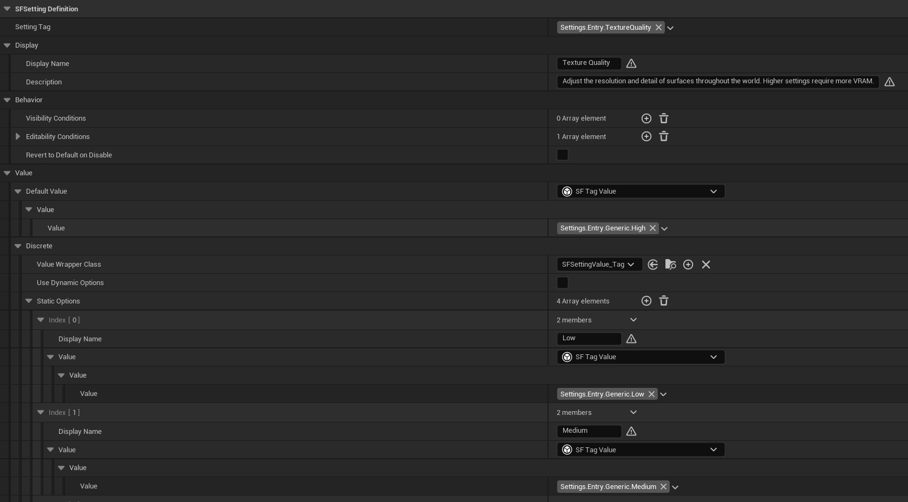
- To define a category, In the Content Browser, right-click > Miscellaneous > Data Asset and select
SF Setting Category. Similar to setting definitions, a category has an indentifying Category Tag, and a Display Name. - The
Category Typefield has 2 options: Branch or Leaf.- A Branch category contains other sub-categories.
- A Leaf category contains setting definitions. You can specify Setting Groups, which are purely presentational groupings with a display name. You can also just add all your setting definitions in the
Settingsarray if you do not want to use groups. In this case, setting entries are displayed all in the same group.
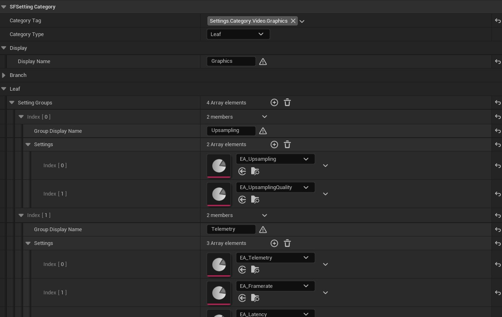
- Lastly, to tie it all together, you need to specify a Settings Registry. In the Content Browser, right-click > Miscellaneous > Data Asset and select
SF Settings Registry. The registry contains all your root categories. At initialization, the Settings Subsystem will traverse the categories down to the leaf level, gathering all setting definitions and load them asynchronously. InWBP_SettingsScreen, root categories are displayed as major tabs, and their subcategories are displayed as minor tabs. - In order for the Settings Subsystem to find your Registry, go to Edit > Project Settings > Settings Framework and assign your registry asset to the
Settings Registryfield.- You may need to press Set As Default to prevent values from being reset between Editor sessions.
- Now your setting definitions are all set.
2 - Displaying the Settings Screen UI on Viewport
If you have an existing project using Common UI, you'll need to push WBP_SettingsScreen onto your CommonActivatableWidgetStack and activate it (either automatically by Common UI or through calling ActivateWidget manually). If you are starting with a blank projects, here are the steps to set it up:
- Make a widget Blueprint of type
CommonUserWidgetand name itWBP_HUD. This will be added to our viewport and act as the main container for widgets in our UI. - In the
WBP_HUD, add aCommonActivatableWidgetStack. Make it a variable and name itWidget Stack. - Make a Blueprint of type
PlayerControllerand name itBP_PlayerController. On Begin Play, set up some script to addWBP_HUDto the viewport and pushWBP_SettingsScreento its widget stack. Normally you would pushWBP_SettingsScreenwhen the player performs an action to bring up the settings screen, but for the sake of simplicity, we'll set it up right at Begin Play since it is the only screen in this project.
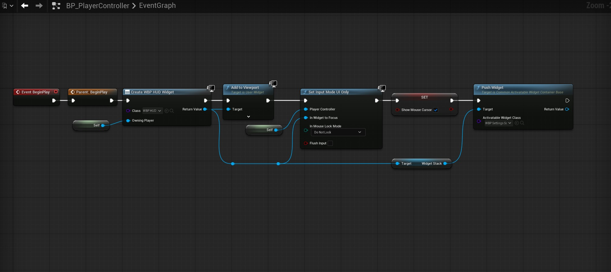
- Make a Blueprint of type
GameModeBaseand name itBP_GameMode. In its Details panel, assign our newBP_PlayerControlleras the new player controller class. - We can use this new game mode active by making it the game mode of a specific level, or the default gamemode of the project. Go to Edit > Project > Maps & Modes and set the
Default Gamemodeto ourBP_GameMode. - For
WBP_SettingsScreento work correctly, we have to specify which component widgets it should use. Go to Edit > Project Settings > Settings Framework and assign the following:- Root Tab Button Class:
WBP_MajorTabButton - Branch Tab Button Class:
WBP_MinorTabButton - Branch Tab Content Class:
WBP_CategoryTab_Branch - Leaf Tab Content Class:
WBP_CategoryTab_Leaf - Setting Group Widget Class:
WBP_SettingGroup - Setting Entry Widget Classes:
SFSettingDefinition_Bool->WBP_SettingEntry_CheckboxSFSettingDefinition_Discrete->WBP_SettingEntry_RotatorSFSettingDefinition_Key->WBP_SettingEntry_KeybindSFSettingDefinition_Scalar->WBP_SettingEntry_Slider
- You may need to press Set As Default to prevent values from being reset between Editor sessions.
- Root Tab Button Class:
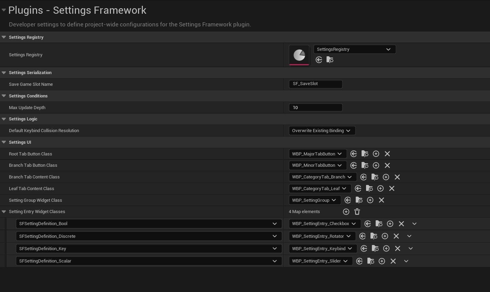
- Now when we start the game, we'll see the settings screen, with all settings populated.
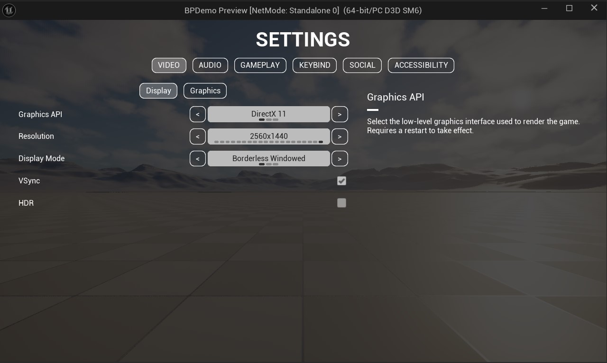
3 - Setting up Visibility and Editability Conditions
Settings can be configured to update their states dynamically at runtime through the Visibility Conditions and Editability Conditions fields in their definition data assets. In this guide's example, Texture Quality should only be user-editable if Graphics Preset is set to Custom.
- Make a Blueprint of type
SFSettingConditionand name itGraphicsPresetCustom. - In this Blueprint, override the function
IsConditionMet. This function should return True if the condition is met, and False otherwise. The following is the example script for checking if Graphics Preset is set to Custom:
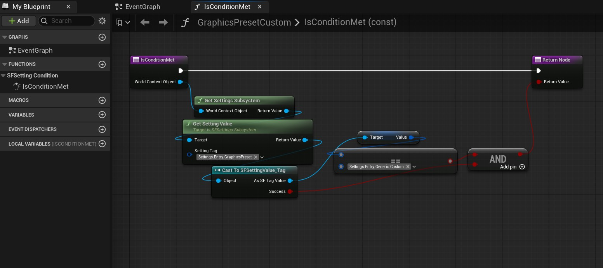
- After saving this condition Blueprint, we assign it to the appropriate setting definition data asset (
EA_TextureQualityfor the Texture Quality setting). - Add an element to the
Editability Conditionsfield, and assign the newly createdGraphicsPresetCustomBlueprint to it. This is the collection of conditions evaluated to determine a setting's editability. The setting is disabled if any condition in the collection returns False. Similarly, the setting is hidden if any condition in theVisibility Conditionscollection returns False.
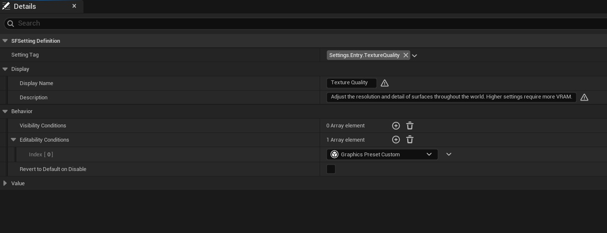
- Now when we start the game, we'll see that Texture Quality is disabled when Graphics Preset is set to Low/Medium/High and only becomes customizable if it is set to Custom.
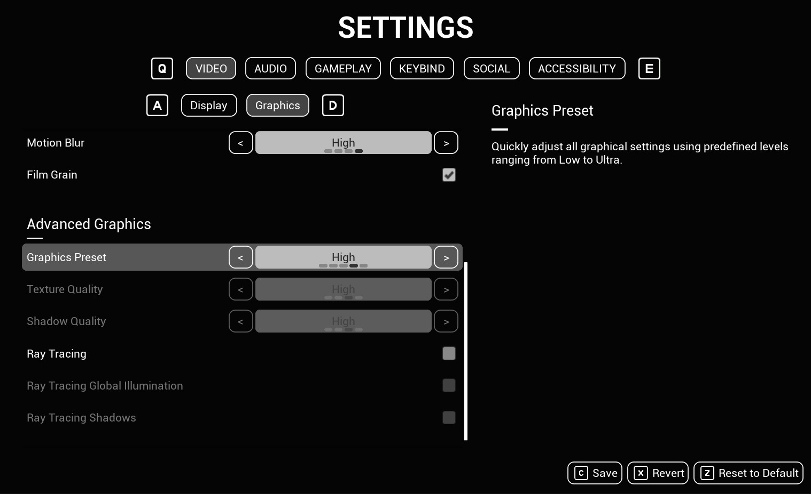
4 - Setting up Reactive Settings
In the previous section, we successfully disable (or hide) the Texture Quality setting when Graphics Preset is not set to Custom. However, when Graphics Preset is set to values such as Low/Medium/High, we also want Texture Quality to update to match. This can be done through the Settings Subsystem's API functions.
This should be implemented in the Blueprint that controls the specific setting's logic. The following steps were implemented in the Player Controller Blueprint for simplicity.
- At
Begin Playor initialization, bind to the Settings Subsystem'sOn Setting Value Changedwith a handler function. Optionally, call the handler function directly with the value of the determinant setting (Graphics Preset in this case)'s value to make sure the logic runs with its initial value.
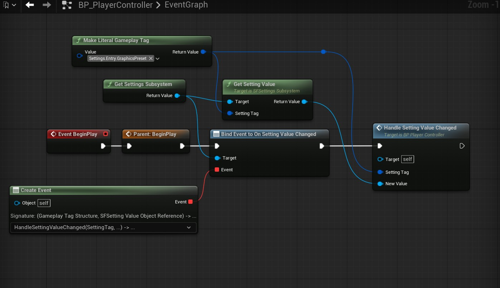
- In the handler function, set up a script that updates Texture Quality according to Graphics Preset's value if it is not set to Custom. Save the Blueprint. The example handler logic is shown in the following screenshot:
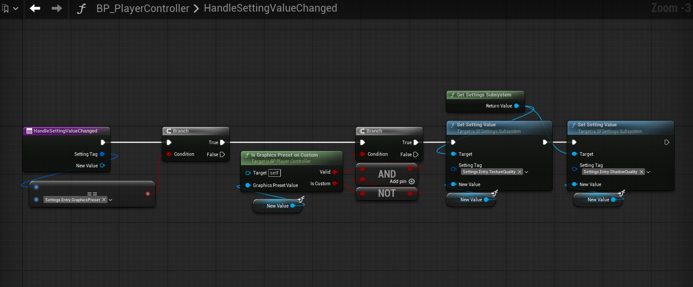
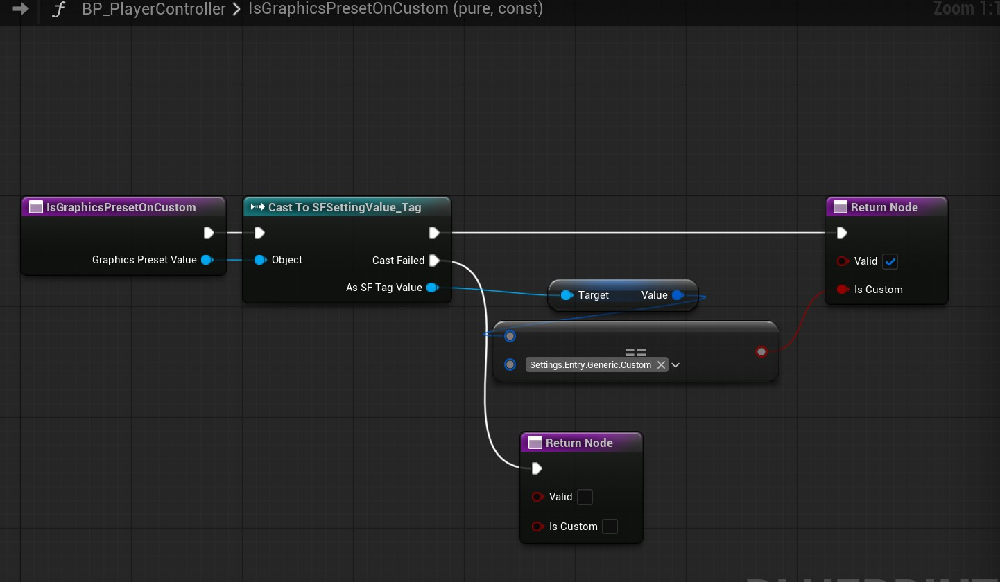
- Now when we start the game, we'll see that Texture Quality is updated according to Graphics Preset's value when it is set to Low/Medium/High.
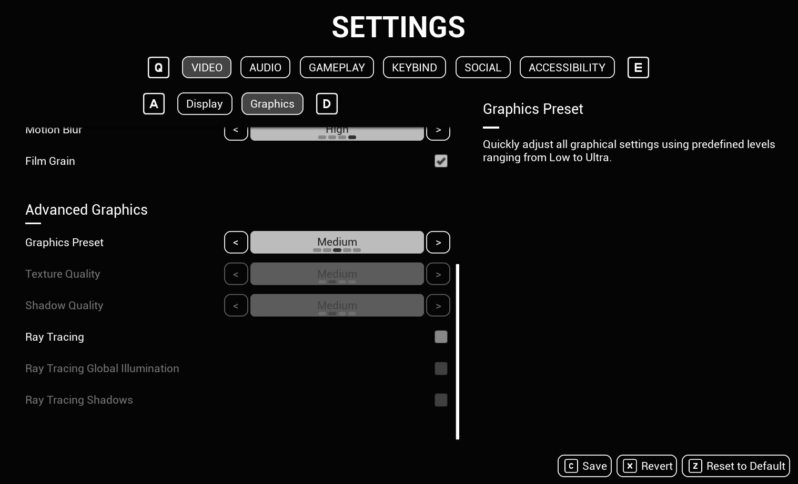
5 - Setting up Runtime Dynamic Options
It is not always possible to specify selectable options at design time for discrete settings. For example, the Resolution setting should be populated with values supported by the monitor, and the Audio Output Device setting should be populated with a list of connected audio devices. This is where dynamic options come in. The following guide shows the process for evaluating and populating the options for the Resolution setting.
- Make a Blueprint of type
USFSettingOptionSourceand name itResolutionOptionSource. - In this Blueprint, override the function
Get Available Options. This function should return an array of selectable options asSFSettingOptionstructs, which contains a localizedDisplay Nameand an underlyingSFSettingValue, which can be of any defined data type. ForResolutionOptionSource, we retrieve the list of supported fullscreen resolutions and construct setting options from them. The script can be seen below:
[[ Screenshot of ResolutionOptionSource::GetAvailableOptions script. ]]
- Additionally, override the function
Get Default Value. This function should return theSFSettingValuethat corresponds to the setting option that the user should revert to upon hitting Revert to Default. TheResolutionOptionSourceexample returns the largest available resolution as the default value.
[[ Screenshot of ResolutionOptionSource::GetDefaultValue script. ]]
- Remember to mention calling RefreshOptions and GetSettingOptions manually.
6 - Setting up Common UI and Enhanced Input for Navigation and Keybind Widget
Common UI with Enhanced Input must be set up for the keybind widget and the built-in gamepad navigation to work. Here are the steps I took to set them up:
- Go to Edit > Project Settings > Game > Common Input Settings and set
Enable Enhanced Input Supportto True. Restart the Editor when prompted. - In the Content Browser, right-click > Input > Input Action to make an Input Action Blueprint and name it
IA_UI_Confirm. Make another one and name itIA_UI_Back. These are our basic yes/no actions. - Make a Blueprint of type
CommonUIInputDataand name itBP_InputData. In its Details panel, setEnhanced Input Click Actionto the newIA_UI_ConfirmandEnhanced Input Back ActiontoIA_UI_Back. - Go to Edit > Project Settings > Game > Common Input Settings and set
Input Datato the newBP_InputData. - Optionally, on the same screen, you can set up controller data assets in Platform Input > Windows (or your platform of choice) > Default > Controller Data. Controller Data helps you assign input key values to icons, which Common UI will use to display prompts for input action on the UI.
- Go to Edit > Project Settings > Engine > General Settings and set
Game Viewport Client ClasstoCommonGameViewportClient. - In the Content Browser, right-click > Input > Input Mapping Context to make an Input Mapping Context (IMC) and name it
IMC_DefaultUI. In this Blueprint, add to the Default Key Mappings > Mappings the yes/no input actions from before (IA_UI_ConfirmandIA_UI_Back) as well as the input actions that came with the plugin (IA_UI_PrevTab_Major,IA_UI_NextTab_Major,IA_UI_PrevTab_Minor,IA_UI_NextTab_Minor,IA_UI_Save,IA_UI_Revert,IA_UI_ResetToDefault). Assign your desired input keys to them.
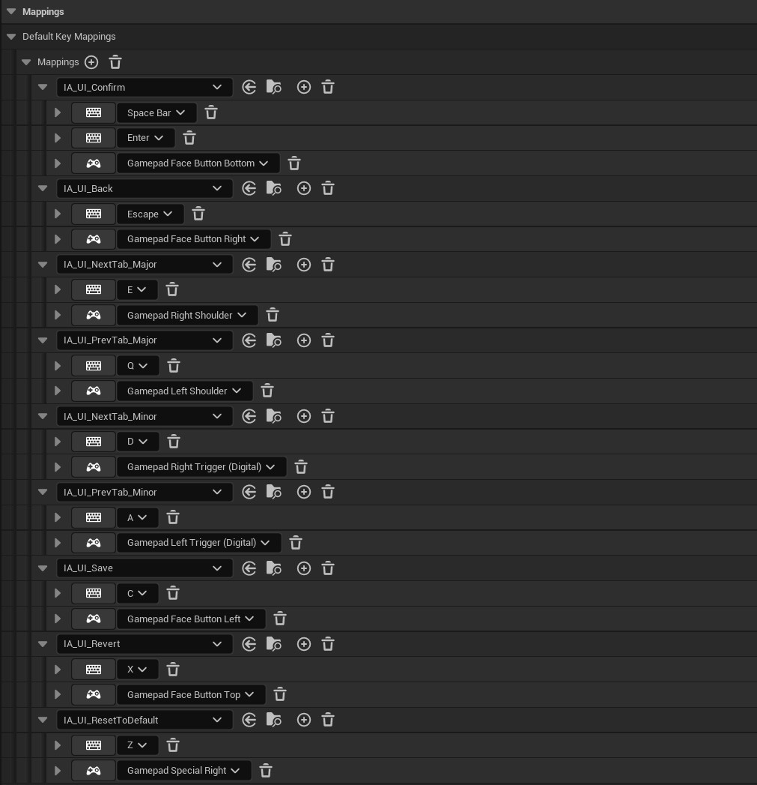
- When using Enhanced Input, we usually want to activate/deactivate IMCs at runtime (for example, switching between gameplay and UI mappings). However, in this project, we only have the UI screen, so we'll make it the default IMC. Go to Edit > Project Settings > Engine > Enhanced Input and add the new
IMC_DefaultUItoDefault Mapping Contexts. - Now when we start the game, our assigned input keys should work to perform actions and action prompts should appear if controller data assets are set up.
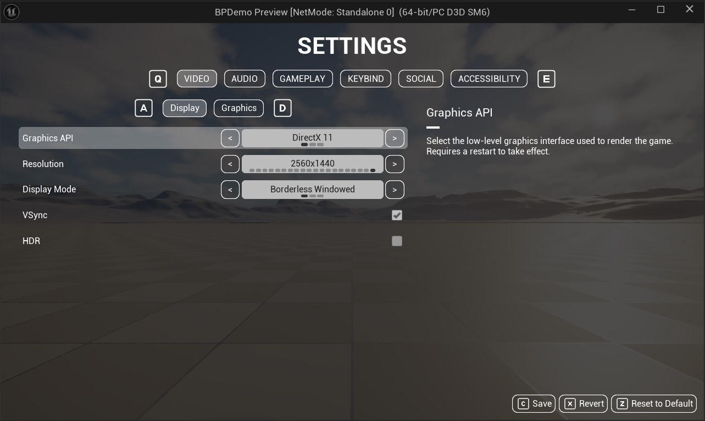